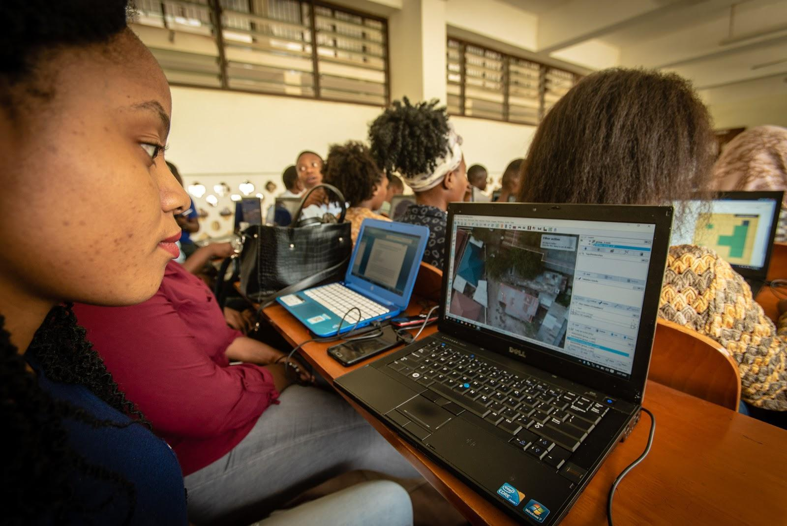

3.0. Cartographie Participative avec OpenStreetMap
Aperçu Général
Dans cette section, les chefs de projet trouveront des outils et des ressources pour diriger et mettre en œuvre des activités d’édition organisée d’OpenStreetMap, notamment : Des présentations et des guides étape par étape pour présenter aux équipes OpenStreetMap et les outils d’édition tels que le gestionnaire de tâches HOT.
- Des ressources pour déterminer si votre projet doit répondre aux directives d’édition organisée d’OSM.
- Des guides détaillés et des activités de formation pour les équipes de numérisation à utiliser lors de la validation et du téléchargement des données

La numérisation, ou cartographie à distance, est le processus qui consiste à tracer des caractéristiques telles que des bâtiments et des routes à partir d’images aériennes ou satellitaires afin de créer des données cartographiques. OpenStreetMap s’appuie fortement sur les utilisateurs qui génèrent des données par le biais de la numérisation.
OpenStreetMap étant au cœur de nos outils et flux de travail, les projets cartographiques utilisant les outils et flux de travail HOT incorporent probablement la numérisation ou l’édition de données OSM au cours d’une, voire de plusieurs phases de la chronologie du projet. Alors que de nombreuses ressources existent pour apprendre aux nouveaux utilisateurs comment utiliser OpenStreetMap pour la première fois, cette section est largement conçue pour guider les gestionnaires de projet et les membres de la communauté à travers le processus de numérisation du point de vue de l’animation de formations et de la gestion d’équipes effectuant l’édition OSM. Les utilisateurs à la recherche de conseils sur la cartographie individuelle dans OSM devraient se tourner vers LearnOSM.org.
- Introduction contient une brève présentation d’OpenStreetMap dans le but d’être distribué en tant que guide de formation complémentaire.
- DDirrectives couvre les considérations que les gestionnaires de projets et les communautés doivent prendre en compte lorsqu’ils organisent des campagnes de numérisation ou d’édition ciblées.
- Travailler fournit une vue d’ensemble de l’outil de HOT pour le crowdsourcing des éditions OpenStreetMap, ainsi qu’un guide pour la mise en place de tâches dans le Gestionnaire de Tâche.
- Edition fournit des conseils sur le choix de l’outil d’édition OSM approprié pour votre projet ou événement, ainsi que du matériel de formation utilisant les deux outils.
- Résoudre fournit une assistance supplémentaire aux équipes qui effectuent des travaux d’édition avancés dans le cadre d’OSM.
La (les) présentation(s) suivante(s) peut (peuvent) être utilisée(s) pour animer une formation ou un atelier :